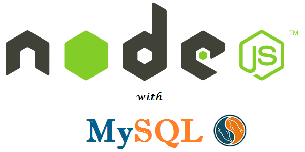

<!DOCTYPE html>
<html lang="en">
<head><meta name="generator" content="Hexo 3.9.0">
    <meta charset="utf-8">
    
    <title>nodeJs mysql (async/await를 이용한 mySql 모듈 만들기) | Dongjun&#39;s Blog</title>
    <meta name="viewport" content="width=device-width, initial-scale=1, maximum-scale=1">
    <meta name="description" content="nodeJs를 이용하여 mysql 혹은 mariaDB 등 RDB를 사용하는 경우가 많다. es7에 제안된 async/await를 사용하여 mysql 모듈을 만들어 볼까 한다.(모듈이라고 하지만 그저 wrapping 한거다.) 기존 사용 했던 mysql 코드처음 mysql을 썼었을때 pool을 이용하여, 매번 connection을 맺고 끊어주고, 또 트랜젝션">
<meta name="keywords" content="expressjs,typescript,nodejs">
<meta property="og:type" content="article">
<meta property="og:title" content="nodeJs mysql (async&#x2F;await를 이용한 mySql 모듈 만들기)">
<meta property="og:url" content="https://mayajuni.github.io/2016/07/12/typescript-nodejs-mysql/index.html">
<meta property="og:site_name" content="Dongjun&#39;s Blog">
<meta property="og:description" content="nodeJs를 이용하여 mysql 혹은 mariaDB 등 RDB를 사용하는 경우가 많다. es7에 제안된 async/await를 사용하여 mysql 모듈을 만들어 볼까 한다.(모듈이라고 하지만 그저 wrapping 한거다.) 기존 사용 했던 mysql 코드처음 mysql을 썼었을때 pool을 이용하여, 매번 connection을 맺고 끊어주고, 또 트랜젝션">
<meta property="og:locale" content="en">
<meta property="og:image" content="https://mayajuni.github.io/2016/07/12/typescript-nodejs-mysql/2016/07/12/typescript-nodejs-mysql/node.js-with-mysql.png">
<meta property="og:updated_time" content="2020-05-28T23:36:25.138Z">
<meta name="twitter:card" content="summary">
<meta name="twitter:title" content="nodeJs mysql (async&#x2F;await를 이용한 mySql 모듈 만들기)">
<meta name="twitter:description" content="nodeJs를 이용하여 mysql 혹은 mariaDB 등 RDB를 사용하는 경우가 많다. es7에 제안된 async/await를 사용하여 mysql 모듈을 만들어 볼까 한다.(모듈이라고 하지만 그저 wrapping 한거다.) 기존 사용 했던 mysql 코드처음 mysql을 썼었을때 pool을 이용하여, 매번 connection을 맺고 끊어주고, 또 트랜젝션">
<meta name="twitter:image" content="https://mayajuni.github.io/2016/07/12/typescript-nodejs-mysql/2016/07/12/typescript-nodejs-mysql/node.js-with-mysql.png">
<link rel="publisher" href="mayajuni10@gmail.com">
<meta property="fb:admins" content="100000731937646">
    
    <link rel="canonical" href="https://mayajuni.github.io/2016/07/12/typescript-nodejs-mysql/">
    

    
        <link rel="icon" href="/css/images/favicon.ico# path to favicon">
    

    <link rel="stylesheet" href="/vendor/font-awesome/css/font-awesome.min.css">
    <link rel="stylesheet" href="/vendor/open-sans/styles.css">
    <link rel="stylesheet" href="/vendor/source-code-pro/styles.css">

    <link rel="stylesheet" href="/css/style.css">

    <script src="/vendor/jquery/2.1.3/jquery.min.js"></script>
    
    
        <link rel="stylesheet" href="/vendor/fancybox/jquery.fancybox.css">
    
    
        <script type="text/javascript">
(function(i,s,o,g,r,a,m) {i['GoogleAnalyticsObject']=r;i[r]=i[r]||function() {
(i[r].q=i[r].q||[]).push(arguments)},i[r].l=1*new Date();a=s.createElement(o),
m=s.getElementsByTagName(o)[0];a.async=1;a.src=g;m.parentNode.insertBefore(a,m)
})(window,document,'script','//www.google-analytics.com/analytics.js','ga');

ga('create', 'UA-79741974-1', 'auto');
ga('send', 'pageview');

</script>
    
    
    

</head></html>
<body>
    <div id="container">
        <header id="header">
    <div id="header-main" class="header-inner">
        <div class="outer">
            <a href="/" id="logo">
                
                <span class="site-title">Dongjun&#39;s Blog</span>
            </a>
            <nav id="main-nav">
                
                    <a class="main-nav-link" href="/archives">Archives</a>
                
                    <a class="main-nav-link" href="/about">About</a>
                
            </nav>
            
                
                <nav id="sub-nav">
                    <div class="profile" id="profile-nav">
                        <a id="profile-anchor" href="javascript:;">
                            
                            <i class="fa fa-caret-down"></i>
                        </a>
                    </div>
                </nav>
            
            <div id="search-form-wrap">

    <form class="search-form">
        <input type="text" class="ins-search-input search-form-input" placeholder="Search" />
        <button type="submit" class="search-form-submit"></button>
    </form>
    <div class="ins-search">
    <div class="ins-search-mask"></div>
    <div class="ins-search-container">
        <div class="ins-input-wrapper">
            <input type="text" class="ins-search-input" placeholder="Type something..." />
            <span class="ins-close ins-selectable"><i class="fa fa-times-circle"></i></span>
        </div>
        <div class="ins-section-wrapper">
            <div class="ins-section-container"></div>
        </div>
    </div>
</div>
<script>
(function (window) {
    var INSIGHT_CONFIG = {
        TRANSLATION: {
            POSTS: 'Posts',
            PAGES: 'Pages',
            CATEGORIES: 'Categories',
            TAGS: 'Tags',
            UNTITLED: '(Untitled)',
        },
        ROOT_URL: '/',
        CONTENT_URL: '/content.json',
    };
    window.INSIGHT_CONFIG = INSIGHT_CONFIG;
})(window);
</script>
<script src="/js/insight.js"></script>

</div>
        </div>
    </div>
    <div id="main-nav-mobile" class="header-sub header-inner">
        <table class="menu outer">
            <tr>
                
                    <td><a class="main-nav-link" href="/archives">Archives</a></td>
                
                    <td><a class="main-nav-link" href="/about">About</a></td>
                
                <td>
                    
    <div class="search-form"  style="text-align: right">
        <input type="text" class="ins-search-input search-form-input" style="width: 175px;" placeholder="Search" />
    </div>

                </td>
            </tr>
        </table>
    </div>
</header>

        <div class="outer">
            
                
            
            <section id="main"><article id="post-typescript-nodejs-mysql" class="article article-type-post" itemscope
         itemprop="blogPost">
    <div class="article-inner">
        
        
        
        <header class="article-header">
            
    
        <h1 class="article-title" itemprop="name">
            nodeJs mysql (async/await를 이용한 mySql 모듈 만들기)
        </h1>
    

            <div class="article-meta">
                
    <div class="article-date">
        <i class="fa fa-calendar"></i>
        <a href="/2016/07/12/typescript-nodejs-mysql/">
            <time datetime="2016-07-11T23:53:11.000Z" itemprop="datePublished">2016-07-12</time>
        </a>
    </div>


                
    <div class="article-category">
    	<i class="fa fa-folder"></i>
        <a class="article-category-link" href="/categories/Typescript/">Typescript</a><i class="fa fa-angle-right"></i><a class="article-category-link" href="/categories/Typescript/nodeJs/">nodeJs</a>
    </div>

                
    <div class="article-tag">
        <i class="fa fa-tag"></i>
        <a class="tag-link" href="/tags/expressjs/">expressjs</a>, <a class="tag-link" href="/tags/nodejs/">nodejs</a>, <a class="tag-link" href="/tags/typescript/">typescript</a>
    </div>

            </div>
        </header>
        
        <div class="article-entry" itemprop="articleBody">
            
            
            <p><br>nodeJs를 이용하여 mysql 혹은 mariaDB 등 RDB를 사용하는 경우가 많다. es7에 제안된 async/await를 사용하여 mysql 모듈을 만들어 볼까 한다.(모듈이라고 하지만 그저 wrapping 한거다.)</p>
<h2 id="기존-사용-했던-mysql-코드"><a href="#기존-사용-했던-mysql-코드" class="headerlink" title="기존 사용 했던 mysql 코드"></a>기존 사용 했던 mysql 코드</h2><p>처음 mysql을 썼었을때 pool을 이용하여, 매번 connection을 맺고 끊어주고, 또 트랜젝션을 맺고 롤백과 commit을 해주는 코드를 썼다.</p>
<p>아마 대부분이 아래와 같을 것이다.:</p>
<figure class="highlight javascript"><table><tr><td class="gutter"><pre><span class="line">1</span><br><span class="line">2</span><br><span class="line">3</span><br><span class="line">4</span><br><span class="line">5</span><br><span class="line">6</span><br><span class="line">7</span><br><span class="line">8</span><br><span class="line">9</span><br><span class="line">10</span><br><span class="line">11</span><br><span class="line">12</span><br><span class="line">13</span><br><span class="line">14</span><br><span class="line">15</span><br><span class="line">16</span><br><span class="line">17</span><br><span class="line">18</span><br><span class="line">19</span><br><span class="line">20</span><br></pre></td><td class="code"><pre><span class="line"><span class="keyword">const</span> mysql = <span class="built_in">require</span>(<span class="string">'mysql'</span>);</span><br><span class="line"><span class="keyword">const</span> DBpool  = mysql.createPool(&#123;</span><br><span class="line">  connectionLimit : <span class="number">10</span>,</span><br><span class="line">  host            : <span class="string">'example.org'</span>,</span><br><span class="line">  user            : <span class="string">'bob'</span>,</span><br><span class="line">  password        : <span class="string">'secret'</span>,</span><br><span class="line">  database        : <span class="string">'my_db'</span></span><br><span class="line">&#125;);</span><br><span class="line"></span><br><span class="line"><span class="keyword">const</span> <span class="keyword">get</span> = id =&gt; &#123;</span><br><span class="line">    DBpool.getConnection(<span class="function">(<span class="params">err, con</span>) =&gt;</span> &#123;</span><br><span class="line">        <span class="keyword">if</span> (err) &#123;</span><br><span class="line">            <span class="keyword">throw</span> err;</span><br><span class="line">        &#125;</span><br><span class="line">        con.query(<span class="string">'select * from user where id= ?'</span>, [id], (err, data) =&gt; &#123;</span><br><span class="line">            con.release();</span><br><span class="line">            ...</span><br><span class="line">        &#125;);</span><br><span class="line">    &#125;);</span><br><span class="line">&#125;</span><br></pre></td></tr></table></figure>

<p>트랜젝션을 사용:</p>
<figure class="highlight javascript"><table><tr><td class="gutter"><pre><span class="line">1</span><br><span class="line">2</span><br><span class="line">3</span><br><span class="line">4</span><br><span class="line">5</span><br><span class="line">6</span><br><span class="line">7</span><br><span class="line">8</span><br><span class="line">9</span><br><span class="line">10</span><br><span class="line">11</span><br><span class="line">12</span><br><span class="line">13</span><br><span class="line">14</span><br><span class="line">15</span><br><span class="line">16</span><br><span class="line">17</span><br><span class="line">18</span><br><span class="line">19</span><br><span class="line">20</span><br><span class="line">21</span><br><span class="line">22</span><br><span class="line">23</span><br><span class="line">24</span><br><span class="line">25</span><br><span class="line">26</span><br><span class="line">27</span><br><span class="line">28</span><br><span class="line">29</span><br><span class="line">30</span><br><span class="line">31</span><br><span class="line">32</span><br><span class="line">33</span><br><span class="line">34</span><br><span class="line">35</span><br><span class="line">36</span><br><span class="line">37</span><br><span class="line">38</span><br><span class="line">39</span><br><span class="line">40</span><br><span class="line">41</span><br><span class="line">42</span><br><span class="line">43</span><br></pre></td><td class="code"><pre><span class="line"><span class="comment">// pool은 생략</span></span><br><span class="line"><span class="keyword">const</span> insert = <span class="function"><span class="params">id</span> =&gt;</span> &#123;</span><br><span class="line">    DBpool.getConnection(<span class="function">(<span class="params">err, con</span>) =&gt;</span> &#123;</span><br><span class="line">        <span class="keyword">if</span> (err) &#123;</span><br><span class="line">            <span class="keyword">throw</span> err;</span><br><span class="line">        &#125;</span><br><span class="line">        con.beginTransaction(<span class="function"><span class="params">err</span> =&gt;</span> &#123;</span><br><span class="line">            <span class="keyword">if</span> (err) &#123;</span><br><span class="line">                con.release();</span><br><span class="line">                <span class="keyword">throw</span> err;</span><br><span class="line">            &#125;</span><br><span class="line"></span><br><span class="line">            con.query(<span class="string">'select * from user where id = ?'</span>, [id], (err, data) =&gt; &#123;</span><br><span class="line">                <span class="keyword">if</span>(err) &#123;</span><br><span class="line">                    <span class="keyword">return</span> con.rollback(<span class="function"><span class="params">()</span> =&gt;</span> &#123;</span><br><span class="line">                        con.release();</span><br><span class="line">                        <span class="keyword">throw</span> err;</span><br><span class="line">                    &#125;);</span><br><span class="line">                &#125;</span><br><span class="line"></span><br><span class="line">                con.query(<span class="string">'insert into user (name) values (?)'</span>, [data[<span class="number">0</span>].name], (err, data) =&gt; &#123;</span><br><span class="line">                    <span class="keyword">if</span>(err) &#123;</span><br><span class="line">                        <span class="keyword">return</span> con.rollback(<span class="function"><span class="params">()</span> =&gt;</span> &#123;</span><br><span class="line">                            con.release();</span><br><span class="line">                            <span class="keyword">throw</span> err;</span><br><span class="line">                        &#125;);</span><br><span class="line">                    &#125;</span><br><span class="line"></span><br><span class="line">                    con.commit(<span class="function">(<span class="params">err</span>) =&gt;</span> &#123;</span><br><span class="line">                        <span class="keyword">if</span> (err) &#123;</span><br><span class="line">                            <span class="keyword">return</span> con.rollback(<span class="function"><span class="params">()</span> =&gt;</span> &#123;</span><br><span class="line">                                con.release();</span><br><span class="line">                                <span class="keyword">throw</span> err;</span><br><span class="line">                            &#125;);</span><br><span class="line">                        &#125;</span><br><span class="line">                        <span class="keyword">return</span> con.release();</span><br><span class="line">                    &#125;);</span><br><span class="line">                &#125;);</span><br><span class="line">                ...</span><br><span class="line">            &#125;);</span><br><span class="line">        &#125;);</span><br><span class="line">    &#125;);</span><br><span class="line">&#125;</span><br></pre></td></tr></table></figure>

<p>이렇게 되면 매번 db 작업을 할때마다 connection 맺어주고 끊어주는 중복된 코드를 작성해야되며, 트렌젝션을 사용할 때는 콜백헬과 좀더 더 긴 코드를 매번 처리해줘야된다.</p>
<p>필자는 이렇게 하는 것이 너무나도 마음에 안들었고 매번 중복된 코드를 쓰는게 너무너무 귀찮아서 아래와 같이 만들어서 사용했다.</p>
<h2 id="1-시작하기"><a href="#1-시작하기" class="headerlink" title="1. 시작하기"></a>1. 시작하기</h2><p>async/await를 사용하기 위해서는 <a href="https://babeljs.io/" target="_blank" rel="noopener">Babel</a>을 사용하거나 <a href="https://www.typescriptlang.org/" target="_blank" rel="noopener">Typescript</a> 같은 것을 사용해야된다. 필자는 Typescript를 사용하기 때문에 Typescript로 진행 하겠다.</p>
<p>기본 설정:</p>
<ol>
<li>NodeJs 설치</li>
<li>Typescript 설치</li>
<li>Typings 설치</li>
</ol>
<blockquote>
<p>자세한 설정은 <a href="https://mayajuni.github.io/2016/06/30/typescript-express_%EC%8B%9C%EC%9E%91%ED%95%98%EA%B8%B0/">Typescript + ExpressJs 시작하기</a>를 참고하여 진행하면 된다.</p>
</blockquote>
<h2 id="2-promise-mysql"><a href="#2-promise-mysql" class="headerlink" title="2. promise-mysql"></a>2. promise-mysql</h2><p>async/await는 전에 <a href="https://mayajuni.github.io/2016/07/04/expressJs-error/">ExpressJs Error</a>에서 설명 했듯이 모든 리턴은 promise로 받아야된다. 그래서 기존 mysql은 callback 기반이기 때문에 사용하지 못하고 npm에 있는 <a href="https://www.npmjs.com/package/promise-mysql" target="_blank" rel="noopener">promise-mysql</a> 모듈을 사용한다.</p>
<figure class="highlight bash"><table><tr><td class="gutter"><pre><span class="line">1</span><br></pre></td><td class="code"><pre><span class="line">npm install --save promise-mysql</span><br></pre></td></tr></table></figure>

<p>promise-mysql모듈은 typings에 없기 때문에 설치를 하지 않고 진행한다.</p>
<h2 id="3-Module-만들기"><a href="#3-Module-만들기" class="headerlink" title="3. Module 만들기"></a>3. Module 만들기</h2><p>기존에는 모든 함수에 connection 맺고 끊는 혹은 콜백하고 커밋하는 코드를 넣어줬다. 이제 그부분을 분리하여, 모듈로 만들 것이다.</p>
<h4 id="1-connection"><a href="#1-connection" class="headerlink" title="1) connection"></a>1) connection</h4><p>내가 생각하는 순서는 다음과 같다.:</p>
<ol>
<li>function을 받는다.</li>
<li>받은 function의 paramter들을  <a href="https://developer.mozilla.org/ko/docs/Web/JavaScript/Reference/Functions/arguments" target="_blank" rel="noopener">“…args”</a>를 사용하여 args에 담는다.</li>
<li>connection을 맺고 connection 객체를 생성한다.</li>
<li>받은 function을 connection객체와 함께 기존 paramter(args)를 넘겨주어 실행 시킨다.</li>
<li>catch를 통해 error가 있을시 connection을 닫아주고 throw error을 해준다.</li>
<li>error가 없을시에는 connection을 닫아주고 실행된 function을 값을 넘겨준다.</li>
</ol>
<p>위와 같이 생각을 했으면, 아마 아래와 같은 코드가 나올 것이다.</p>
<figure class="highlight javascript"><table><tr><td class="gutter"><pre><span class="line">1</span><br><span class="line">2</span><br><span class="line">3</span><br><span class="line">4</span><br><span class="line">5</span><br><span class="line">6</span><br><span class="line">7</span><br><span class="line">8</span><br><span class="line">9</span><br><span class="line">10</span><br><span class="line">11</span><br><span class="line">12</span><br><span class="line">13</span><br><span class="line">14</span><br><span class="line">15</span><br><span class="line">16</span><br><span class="line">17</span><br><span class="line">18</span><br><span class="line">19</span><br><span class="line">20</span><br><span class="line">21</span><br><span class="line">22</span><br><span class="line">23</span><br><span class="line">24</span><br><span class="line">25</span><br><span class="line">26</span><br><span class="line">27</span><br></pre></td><td class="code"><pre><span class="line"><span class="comment">/**</span></span><br><span class="line"><span class="comment"> * 기존 import 하는 방식이 아닌 이유는 promise-mysql은</span></span><br><span class="line"><span class="comment"> * 정의 파일(typings)이 없기 때문에 아래와 같이 쓴다.</span></span><br><span class="line"><span class="comment"> */</span></span><br><span class="line"><span class="keyword">const</span> promiseMysql = <span class="built_in">require</span>(<span class="string">'promise-mysql'</span>);</span><br><span class="line"></span><br><span class="line"><span class="keyword">const</span> pool  = promiseMysql.createPool(&#123;</span><br><span class="line">  connectionLimit : <span class="number">10</span>,</span><br><span class="line">  host: <span class="string">'example.org'</span>,</span><br><span class="line">  user: <span class="string">'bob'</span>,</span><br><span class="line">  password: <span class="string">'secret'</span>,</span><br><span class="line">  database: <span class="string">'my_db'</span></span><br><span class="line">&#125;);</span><br><span class="line"></span><br><span class="line"><span class="keyword">export</span> <span class="keyword">const</span> connect = <span class="function"><span class="params">fn</span> =&gt;</span> <span class="keyword">async</span> (...args) =&gt; &#123;</span><br><span class="line">    <span class="comment">/* DB 커넥션을 한다. */</span></span><br><span class="line">    <span class="keyword">let</span> con: any = <span class="keyword">await</span> pool.getConnection();</span><br><span class="line">    <span class="comment">/* 로직에 con과 args(넘겨받은 paramter)를 넘겨준다. */</span></span><br><span class="line">    <span class="keyword">const</span> result = <span class="keyword">await</span> fn(con, ...args).catch(<span class="function"><span class="params">error</span> =&gt;</span> &#123;</span><br><span class="line">        <span class="comment">/* 에러시 con을 닫아준다. */</span></span><br><span class="line">        con.connection.release();</span><br><span class="line">        <span class="keyword">throw</span> error;</span><br><span class="line">    &#125;);</span><br><span class="line">    <span class="comment">/* con을 닫아준다. */</span></span><br><span class="line">    con.connection.release();</span><br><span class="line">    <span class="keyword">return</span> result;</span><br><span class="line">&#125;;</span><br></pre></td></tr></table></figure>

<h4 id="2-트렌젝션-모듈"><a href="#2-트렌젝션-모듈" class="headerlink" title="2) 트렌젝션 모듈"></a>2) 트렌젝션 모듈</h4><p>트렌젝션 모듈도 위의 connection모듈과 크게 다르지 않을것이다. 그저 롤백과 커밋이 들어간것이다.</p>
<ol>
<li>function을 받는다.</li>
<li>받은 function의 paramter들을  <a href="https://developer.mozilla.org/ko/docs/Web/JavaScript/Reference/Functions/arguments" target="_blank" rel="noopener">“…args”</a>를 사용하여 args에 담는다.</li>
<li>connection을 맺고 connection 객체를 생성한다.</li>
<li>트렌젝션을 시작하는 코드를 넣는다.</li>
<li>받은 function을 connection객체와 함께 기존 paramter(args)를 넘겨주어 실행 시킨다.</li>
<li>catch를 통해 error가 있을시 rollback과 connection을 닫아주고 throw error을 해준다.</li>
<li>error가 없을시에는 commit과 connection을 닫아주고 실행된 function을 값을 넘겨준다.</li>
</ol>
<p>위와 같이 생각을 했으면, 아마 아래와 같은 코드가 나올 것이다.</p>
<figure class="highlight javascript"><table><tr><td class="gutter"><pre><span class="line">1</span><br><span class="line">2</span><br><span class="line">3</span><br><span class="line">4</span><br><span class="line">5</span><br><span class="line">6</span><br><span class="line">7</span><br><span class="line">8</span><br><span class="line">9</span><br><span class="line">10</span><br><span class="line">11</span><br><span class="line">12</span><br><span class="line">13</span><br><span class="line">14</span><br><span class="line">15</span><br><span class="line">16</span><br><span class="line">17</span><br><span class="line">18</span><br><span class="line">19</span><br><span class="line">20</span><br></pre></td><td class="code"><pre><span class="line"><span class="comment">// pool 생략</span></span><br><span class="line"><span class="keyword">export</span> <span class="keyword">const</span> transaction = <span class="function"><span class="params">fn</span> =&gt;</span> <span class="keyword">async</span> (...args) =&gt; &#123;</span><br><span class="line">    <span class="comment">/* DB 커넥션을 한다. */</span></span><br><span class="line">    <span class="keyword">const</span> con: any = <span class="keyword">await</span> pool.getConnection();</span><br><span class="line">    <span class="comment">/* 트렌젝션 시작 */</span></span><br><span class="line">    <span class="keyword">await</span> con.connection.beginTransaction();</span><br><span class="line">    <span class="comment">/* 비지니스 로직에 con을 넘겨준다. */</span></span><br><span class="line">    <span class="keyword">const</span> result = <span class="keyword">await</span> fn(con, ...args).catch(<span class="keyword">async</span> (error) =&gt; &#123;</span><br><span class="line">        <span class="comment">/* rollback을 진행한다. */</span></span><br><span class="line">         <span class="keyword">await</span> con.rollback();</span><br><span class="line">        <span class="comment">/* 에러시 con을 닫아준다. */</span></span><br><span class="line">        con.connection.release();</span><br><span class="line">        <span class="keyword">throw</span> error;</span><br><span class="line">    &#125;);</span><br><span class="line">    <span class="comment">/* commit을 해준다. */</span></span><br><span class="line">    <span class="keyword">await</span> con.commit();</span><br><span class="line">    <span class="comment">/* con을 닫아준다. */</span></span><br><span class="line">    con.connection.release();</span><br><span class="line">    <span class="keyword">return</span> result;</span><br><span class="line">&#125;</span><br></pre></td></tr></table></figure>

<p>위와 같이 만든 모듈을 하나로 합치고 mysql모듈이라고 명칭하면 아래와 같다.</p>
<figure class="highlight javascript"><figcaption><span>mysql.ts</span></figcaption><table><tr><td class="gutter"><pre><span class="line">1</span><br><span class="line">2</span><br><span class="line">3</span><br><span class="line">4</span><br><span class="line">5</span><br><span class="line">6</span><br><span class="line">7</span><br><span class="line">8</span><br><span class="line">9</span><br><span class="line">10</span><br><span class="line">11</span><br><span class="line">12</span><br><span class="line">13</span><br><span class="line">14</span><br><span class="line">15</span><br><span class="line">16</span><br><span class="line">17</span><br><span class="line">18</span><br><span class="line">19</span><br><span class="line">20</span><br><span class="line">21</span><br><span class="line">22</span><br><span class="line">23</span><br><span class="line">24</span><br><span class="line">25</span><br><span class="line">26</span><br><span class="line">27</span><br><span class="line">28</span><br><span class="line">29</span><br><span class="line">30</span><br><span class="line">31</span><br><span class="line">32</span><br><span class="line">33</span><br><span class="line">34</span><br><span class="line">35</span><br><span class="line">36</span><br><span class="line">37</span><br><span class="line">38</span><br><span class="line">39</span><br><span class="line">40</span><br><span class="line">41</span><br><span class="line">42</span><br><span class="line">43</span><br><span class="line">44</span><br><span class="line">45</span><br><span class="line">46</span><br><span class="line">47</span><br><span class="line">48</span><br><span class="line">49</span><br><span class="line">50</span><br><span class="line">51</span><br><span class="line">52</span><br><span class="line">53</span><br><span class="line">54</span><br><span class="line">55</span><br></pre></td><td class="code"><pre><span class="line"><span class="comment">/**</span></span><br><span class="line"><span class="comment"> * 기존 import 하는 방식이 아닌 이유는 promise-mysql은</span></span><br><span class="line"><span class="comment"> * 정의 파일(typings)이 없기 때문에 아래와 같이 쓴다.</span></span><br><span class="line"><span class="comment"> */</span></span><br><span class="line"><span class="keyword">const</span> promiseMysql = <span class="built_in">require</span>(<span class="string">'promise-mysql'</span>);</span><br><span class="line"><span class="keyword">import</span> * <span class="keyword">as</span> dotenv <span class="keyword">from</span> <span class="string">'dotenv'</span>;</span><br><span class="line"></span><br><span class="line">dotenv.config(&#123;</span><br><span class="line">    silent: <span class="literal">true</span>,</span><br><span class="line">    path: <span class="string">'.env'</span></span><br><span class="line">&#125;);</span><br><span class="line"></span><br><span class="line"><span class="keyword">const</span> pool = promiseMysql.createPool(&#123;</span><br><span class="line">    connectionLimit : <span class="number">10</span>,</span><br><span class="line">    host: process.env.MYSQL_HOST,</span><br><span class="line">    user: process.env.MYSQL_USER,</span><br><span class="line">    password: process.env.MYSQL_PASSWORD,</span><br><span class="line">    database: process.env.MYSQL_DB</span><br><span class="line">&#125;);</span><br><span class="line"></span><br><span class="line"><span class="keyword">export</span> <span class="built_in">module</span> mysql &#123;</span><br><span class="line">    <span class="keyword">export</span> <span class="keyword">const</span> connect = <span class="function"><span class="params">fn</span> =&gt;</span> <span class="keyword">async</span> (...args) =&gt; &#123;</span><br><span class="line">        <span class="comment">/* DB 커넥션을 한다. */</span></span><br><span class="line">        <span class="keyword">const</span> con: any = <span class="keyword">await</span> pool.getConnection();</span><br><span class="line">        <span class="comment">/* 로직에 con과 args(넘겨받은 paramter)를 넘겨준다. */</span></span><br><span class="line">        <span class="keyword">const</span> result = <span class="keyword">await</span> fn(con, ...args).catch(<span class="function"><span class="params">error</span> =&gt;</span> &#123;</span><br><span class="line">            <span class="comment">/* 에러시 con을 닫아준다. */</span></span><br><span class="line">            con.connection.release();</span><br><span class="line">            <span class="keyword">throw</span> error;</span><br><span class="line">        &#125;);</span><br><span class="line">        <span class="comment">/* con을 닫아준다. */</span></span><br><span class="line">        con.connection.release();</span><br><span class="line">        <span class="keyword">return</span> result;</span><br><span class="line">    &#125;;</span><br><span class="line"></span><br><span class="line">    <span class="keyword">export</span> <span class="keyword">const</span> transaction = <span class="function"><span class="params">fn</span> =&gt;</span> <span class="keyword">async</span> (...args) =&gt; &#123;</span><br><span class="line">        <span class="comment">/* DB 커넥션을 한다. */</span></span><br><span class="line">        <span class="keyword">const</span> con: any = <span class="keyword">await</span> pool.getConnection();</span><br><span class="line">        <span class="comment">/* 트렌젝션 시작 */</span></span><br><span class="line">        <span class="keyword">await</span> con.connection.beginTransaction();</span><br><span class="line">        <span class="comment">/* 비지니스 로직에 con을 넘겨준다. */</span></span><br><span class="line">        <span class="keyword">const</span> result = <span class="keyword">await</span> fn(con, ...args).catch(<span class="keyword">async</span> (error) =&gt; &#123;</span><br><span class="line">            <span class="comment">/* rollback을 진행한다. */</span></span><br><span class="line">             <span class="keyword">await</span> con.rollback();</span><br><span class="line">            <span class="comment">/* 에러시 con을 닫아준다. */</span></span><br><span class="line">            con.connection.release();</span><br><span class="line">            <span class="keyword">throw</span> error;</span><br><span class="line">        &#125;);</span><br><span class="line">        <span class="comment">/* commit을 해준다. */</span></span><br><span class="line">        <span class="keyword">await</span> con.commit();</span><br><span class="line">        <span class="comment">/* con을 닫아준다. */</span></span><br><span class="line">        con.connection.release();</span><br><span class="line">        <span class="keyword">return</span> result;</span><br><span class="line">    &#125;</span><br><span class="line">&#125;</span><br></pre></td></tr></table></figure>

<p>이렇게 하면 mysql 모듈이 완성이다.</p>
<h2 id="4-사용법"><a href="#4-사용법" class="headerlink" title="4. 사용법"></a>4. 사용법</h2><p>일반 connection 사용:</p>
<figure class="highlight javascript"><table><tr><td class="gutter"><pre><span class="line">1</span><br><span class="line">2</span><br><span class="line">3</span><br><span class="line">4</span><br></pre></td><td class="code"><pre><span class="line"><span class="comment">/* 위에 만든 mysql 모듈이다. */</span></span><br><span class="line"><span class="keyword">import</span> &#123;mysql&#125; <span class="keyword">from</span> <span class="string">"mysql"</span></span><br><span class="line"></span><br><span class="line"><span class="keyword">const</span> <span class="keyword">get</span> = mysql.connect((con: any, id: string) =&gt; con.query('select * from user', [id]));</span><br></pre></td></tr></table></figure>

<p>너무 간단하게 한줄로 끝내버렸다. 물론 단순 select한 값을 리턴했기 때문에 위와 같이 한줄로 나올수 있는 것이다. 만약 다른 비지니스 로직이 있다고 하면 아래와 같다.</p>
<figure class="highlight javascript"><table><tr><td class="gutter"><pre><span class="line">1</span><br><span class="line">2</span><br><span class="line">3</span><br><span class="line">4</span><br><span class="line">5</span><br><span class="line">6</span><br><span class="line">7</span><br><span class="line">8</span><br><span class="line">9</span><br><span class="line">10</span><br></pre></td><td class="code"><pre><span class="line"><span class="comment">/* 위에 만든 mysql 모듈이다. */</span></span><br><span class="line"><span class="keyword">import</span> &#123;mysql&#125; <span class="keyword">from</span> <span class="string">"mysql"</span></span><br><span class="line"></span><br><span class="line"><span class="keyword">const</span> <span class="keyword">get</span> = mysql.connect(async (con: any, id: string) =&gt; &#123;</span><br><span class="line">        <span class="keyword">const</span> result = <span class="keyword">await</span> con.query(<span class="string">'select * from user'</span>, [id]);</span><br><span class="line"></span><br><span class="line">        <span class="comment">// ...비지니스로직...</span></span><br><span class="line"></span><br><span class="line">        <span class="keyword">return</span> result</span><br><span class="line">    &#125;);</span><br></pre></td></tr></table></figure>

<p>굳이 동기로 할 필요 없을시에는 async를 빼도 된다.</p>
<p>트랜젝션을 사용:</p>
<figure class="highlight javascript"><table><tr><td class="gutter"><pre><span class="line">1</span><br><span class="line">2</span><br><span class="line">3</span><br><span class="line">4</span><br><span class="line">5</span><br><span class="line">6</span><br><span class="line">7</span><br><span class="line">8</span><br><span class="line">9</span><br></pre></td><td class="code"><pre><span class="line"><span class="comment">/* 위에 만든 mysql 모듈이다. */</span></span><br><span class="line"><span class="keyword">import</span> &#123;mysql&#125; <span class="keyword">from</span> <span class="string">"mysql"</span></span><br><span class="line"></span><br><span class="line"><span class="keyword">const</span> insert = mysql.transaction(<span class="keyword">async</span> (con: any, <span class="attr">id</span>: string) =&gt; &#123;</span><br><span class="line">    <span class="keyword">const</span> user = <span class="keyword">await</span> con.query(<span class="string">'select * from user where id = ?'</span>, [id]);</span><br><span class="line">    <span class="keyword">await</span> con.query(<span class="string">'insert into user (name) values (?)'</span>, [user[<span class="number">0</span>].name]);</span><br><span class="line">    <span class="comment">/* 리턴할 값이 없을시 그냥 return만 써도 된다. */</span></span><br><span class="line">    <span class="keyword">return</span> user;</span><br><span class="line">&#125;);</span><br></pre></td></tr></table></figure>

<p>트랜젝션을 사용하는 코드는 더욱더 짧아진 코드량을 볼 수 있다.</p>
<blockquote>
<p>이 모듈에 대한 예제를 <a href="https://github.com/mayajuni/async-await-mysql" target="_blank" rel="noopener">github</a>에 올렸다. 한번 보면 좀더 이해하기 편할 것이다. 도움이 되었다면 위의 별도 한번 눌러 주는 센스!</p>
</blockquote>
<p><code>반말로 블로그를 작성하였는데 이해해주시기 바랍니다. 문의 및 수정 사항은 댓글이나 mayajuni10@gmail.com으로 이메일 보내주시기 바랍니다.</code></p>

            
        </div>
        <footer class="article-footer">
            <div class="share-container">


</div>

    <a data-url="https://mayajuni.github.io/2016/07/12/typescript-nodejs-mysql/" data-id="ckarflz8q000cyo04elnb8vbj" class="article-share-link"><i class="fa fa-share"></i>Share</a>
<script>
    (function ($) {
        // Prevent duplicate binding
        if (typeof(__SHARE_BUTTON_BINDED__) === 'undefined' || !__SHARE_BUTTON_BINDED__) {
            __SHARE_BUTTON_BINDED__ = true;
        } else {
            return;
        }
        $('body').on('click', function() {
            $('.article-share-box.on').removeClass('on');
        }).on('click', '.article-share-link', function(e) {
            e.stopPropagation();

            var $this = $(this),
                url = $this.attr('data-url'),
                encodedUrl = encodeURIComponent(url),
                id = 'article-share-box-' + $this.attr('data-id'),
                offset = $this.offset(),
                box;

            if ($('#' + id).length) {
                box = $('#' + id);

                if (box.hasClass('on')){
                    box.removeClass('on');
                    return;
                }
            } else {
                var html = [
                    '<div id="' + id + '" class="article-share-box">',
                        '<input class="article-share-input" value="' + url + '">',
                        '<div class="article-share-links">',
                            '<a href="https://twitter.com/intent/tweet?url=' + encodedUrl + '" class="fa fa-twitter article-share-twitter" target="_blank" title="Twitter"></a>',
                            '<a href="https://www.facebook.com/sharer.php?u=' + encodedUrl + '" class="fa fa-facebook article-share-facebook" target="_blank" title="Facebook"></a>',
                            '<a href="http://pinterest.com/pin/create/button/?url=' + encodedUrl + '" class="fa fa-pinterest article-share-pinterest" target="_blank" title="Pinterest"></a>',
                            '<a href="https://plus.google.com/share?url=' + encodedUrl + '" class="fa fa-google article-share-google" target="_blank" title="Google+"></a>',
                        '</div>',
                    '</div>'
                ].join('');

              box = $(html);

              $('body').append(box);
            }

            $('.article-share-box.on').hide();

            box.css({
                top: offset.top + 25,
                left: offset.left
            }).addClass('on');

        }).on('click', '.article-share-box', function (e) {
            e.stopPropagation();
        }).on('click', '.article-share-box-input', function () {
            $(this).select();
        }).on('click', '.article-share-box-link', function (e) {
            e.preventDefault();
            e.stopPropagation();

            window.open(this.href, 'article-share-box-window-' + Date.now(), 'width=500,height=450');
        });
    })(jQuery);
</script>

            
    
        <a href="https://mayajuni.github.io/2016/07/12/typescript-nodejs-mysql/#comments" class="article-comment-link disqus-comment-count" data-disqus-url="https://mayajuni.github.io/2016/07/12/typescript-nodejs-mysql/">Comments</a>
    

        </footer>
    </div>
    
    
<nav id="article-nav">
    
        <a href="/2016/11/30/angular2-실무-프로젝트-회고/" id="article-nav-newer" class="article-nav-link-wrap">
            <strong class="article-nav-caption">Newer</strong>
            <div class="article-nav-title">
                
                    angular2 실무 프로젝트 회고
                
            </div>
        </a>
    
    
        <a href="/2016/07/04/expressJs-error/" id="article-nav-older" class="article-nav-link-wrap">
            <strong class="article-nav-caption">Older</strong>
            <div class="article-nav-title">ExpressJs Error</div>
        </a>
    
</nav>


    
</article>


    <section id="comments">
    
        
<div id="disqus_thread">
    <noscript>Please enable JavaScript to view the <a href="//disqus.com/?ref_noscript">comments powered by Disqus.</a>
    </noscript>
</div>

    
    </section>

</section>
            
                

<aside id="profile">
    <div class="inner profile-inner" id="profileDetail" style="display: none;">
        <div class="base-info profile-block">
            
            <h2 id="name"></h2>
            <h3 id="title">Web Developer</h3>
            <span id="location"><i class="fa fa-map-marker"></i>Seoul, Korea</span>
            <!--<a id="follow" target="_blank" href="https://github.com/mayajuni">FOLLOW</a>-->
        </div>
        <div class="article-info profile-block">
            <div class="article-info-block">
                <a href="https://github.com/mayajuni?tab=repositories">
                    <div id="repos"></div>
                    <span>REPOS</span>
                </a>
            </div>
            <div class="article-info-block">
                <a href="https://github.com/mayajuni/followers">
                    <div id="followers"></div>
                    <span>FOLLOWERS</span>
                </a>
            </div>
        </div>
        
        <div class="profile-block social-links">
            <table>
                <tr>
                    
                    
                    <td>
                        <a href="http://github.com/mayajuni" target="_blank" title="github" class=tooltip>
                            <i class="fa fa-github"></i>
                        </a>
                    </td>
                    
                    <td>
                        <a href="https://www.facebook.com/dongjun.kwon.39" target="_blank" title="facebook" class=tooltip>
                            <i class="fa fa-facebook"></i>
                        </a>
                    </td>
                    
                    <td>
                        <a href="/feed.xml" target="_blank" title="rss" class=tooltip>
                            <i class="fa fa-rss"></i>
                        </a>
                    </td>
                    
                </tr>
            </table>
        </div>
        
        <!--<div class="article-info profile-block">
            <div class="article-info-block">
                11
                <span>posts</span>
            </div>
            <div class="article-info-block">
                17
                <span>tags</span>
            </div>
        </div>-->
    </div>

    <div id="sidebar" class="sidebar">
        
        
    <div class="widget-wrap">
        <h3 class="widget-title">categories</h3>
        <div class="widget">
            <ul class="category-list"><li class="category-list-item"><a class="category-list-link" href="/categories/ExpressJs/">ExpressJs</a><span class="category-list-count">1</span></li><li class="category-list-item"><a class="category-list-link" href="/categories/NoSql/">NoSql</a><span class="category-list-count">1</span><ul class="category-list-child"><li class="category-list-item"><a class="category-list-link" href="/categories/NoSql/rethinkDB/">rethinkDB</a><span class="category-list-count">1</span></li></ul></li><li class="category-list-item"><a class="category-list-link" href="/categories/Typescript/">Typescript</a><span class="category-list-count">2</span><ul class="category-list-child"><li class="category-list-item"><a class="category-list-link" href="/categories/Typescript/nodeJs/">nodeJs</a><span class="category-list-count">2</span></li></ul></li><li class="category-list-item"><a class="category-list-link" href="/categories/eos/">eos</a><span class="category-list-count">2</span><ul class="category-list-child"><li class="category-list-item"><a class="category-list-link" href="/categories/eos/eosjs/">eosjs</a><span class="category-list-count">2</span></li></ul></li><li class="category-list-item"><a class="category-list-link" href="/categories/es2015/">es2015</a><span class="category-list-count">1</span></li><li class="category-list-item"><a class="category-list-link" href="/categories/server/">server</a><span class="category-list-count">1</span></li><li class="category-list-item"><a class="category-list-link" href="/categories/회고/">회고</a><span class="category-list-count">3</span></li></ul>
        </div>
    </div>

        
        
    <div class="widget-wrap">
        <h3 class="widget-title">recent</h3>
        <div class="widget">
            <ul id="recent-post" class="no-thumbnail">
                
                    <li>
                        
                        <div class="item-inner">
                            <p class="item-category"><a class="article-category-link" href="/categories/회고/">회고</a></p>
                            <p class="item-title"><a href="/2020/01/28/CTO로-한해를-보내며-2019-회고/" class="title">CTO로 한해를 보내며.. (2019 회고)</a></p>
                            <p class="item-date"><time datetime="2020-01-28T05:19:00.000Z" itemprop="datePublished">2020-01-28</time></p>
                        </div>
                    </li>
                
                    <li>
                        
                        <div class="item-inner">
                            <p class="item-category"><a class="article-category-link" href="/categories/server/">server</a></p>
                            <p class="item-title"><a href="/2020/01/17/Lambda를-선택한-이유/" class="title">Serverless를 선택한 이유(Lambda, Altas)</a></p>
                            <p class="item-date"><time datetime="2020-01-17T03:25:00.000Z" itemprop="datePublished">2020-01-17</time></p>
                        </div>
                    </li>
                
                    <li>
                        
                        <div class="item-inner">
                            <p class="item-category"><a class="article-category-link" href="/categories/eos/">eos</a><i class="fa fa-angle-right"></i><a class="article-category-link" href="/categories/eos/eosjs/">eosjs</a></p>
                            <p class="item-title"><a href="/2018/08/01/EosJS-API-사용-1/" class="title">EosJS API 사용</a></p>
                            <p class="item-date"><time datetime="2018-08-01T01:32:00.000Z" itemprop="datePublished">2018-08-01</time></p>
                        </div>
                    </li>
                
                    <li>
                        
                        <div class="item-inner">
                            <p class="item-category"><a class="article-category-link" href="/categories/eos/">eos</a><i class="fa fa-angle-right"></i><a class="article-category-link" href="/categories/eos/eosjs/">eosjs</a></p>
                            <p class="item-title"><a href="/2018/07/16/eosJs-시작하기/" class="title">eosJs 시작하기</a></p>
                            <p class="item-date"><time datetime="2018-07-16T05:19:00.000Z" itemprop="datePublished">2018-07-16</time></p>
                        </div>
                    </li>
                
                    <li>
                        
                        <div class="item-inner">
                            <p class="item-category"><a class="article-category-link" href="/categories/NoSql/">NoSql</a><i class="fa fa-angle-right"></i><a class="article-category-link" href="/categories/NoSql/rethinkDB/">rethinkDB</a></p>
                            <p class="item-title"><a href="/2017/03/27/RethinkDB-시작하기/" class="title">RethinkDB 소개</a></p>
                            <p class="item-date"><time datetime="2017-03-27T04:18:00.000Z" itemprop="datePublished">2017-03-27</time></p>
                        </div>
                    </li>
                
            </ul>
        </div>
    </div>

        
        
    <div class="widget-wrap">
        <h3 class="widget-title">archives</h3>
        <div class="widget">
            <ul class="archive-list"><li class="archive-list-item"><a class="archive-list-link" href="/archives/2020/01/">January 2020</a><span class="archive-list-count">2</span></li><li class="archive-list-item"><a class="archive-list-link" href="/archives/2018/08/">August 2018</a><span class="archive-list-count">1</span></li><li class="archive-list-item"><a class="archive-list-link" href="/archives/2018/07/">July 2018</a><span class="archive-list-count">1</span></li><li class="archive-list-item"><a class="archive-list-link" href="/archives/2017/03/">March 2017</a><span class="archive-list-count">1</span></li><li class="archive-list-item"><a class="archive-list-link" href="/archives/2016/12/">December 2016</a><span class="archive-list-count">2</span></li><li class="archive-list-item"><a class="archive-list-link" href="/archives/2016/11/">November 2016</a><span class="archive-list-count">1</span></li><li class="archive-list-item"><a class="archive-list-link" href="/archives/2016/07/">July 2016</a><span class="archive-list-count">2</span></li><li class="archive-list-item"><a class="archive-list-link" href="/archives/2016/06/">June 2016</a><span class="archive-list-count">1</span></li></ul>
        </div>
    </div>

        
        
    <div class="widget-wrap">
        <h3 class="widget-title">tags</h3>
        <div class="widget">
            <ul class="tag-list"><li class="tag-list-item"><a class="tag-list-link" href="/tags/2016/">2016</a><span class="tag-list-count">1</span></li><li class="tag-list-item"><a class="tag-list-link" href="/tags/2019/">2019</a><span class="tag-list-count">1</span></li><li class="tag-list-item"><a class="tag-list-link" href="/tags/NoSql/">NoSql</a><span class="tag-list-count">1</span></li><li class="tag-list-item"><a class="tag-list-link" href="/tags/aws/">aws</a><span class="tag-list-count">1</span></li><li class="tag-list-item"><a class="tag-list-link" href="/tags/block-chain/">block chain</a><span class="tag-list-count">1</span></li><li class="tag-list-item"><a class="tag-list-link" href="/tags/eos/">eos</a><span class="tag-list-count">1</span></li><li class="tag-list-item"><a class="tag-list-link" href="/tags/eosjs/">eosjs</a><span class="tag-list-count">2</span></li><li class="tag-list-item"><a class="tag-list-link" href="/tags/es2015/">es2015</a><span class="tag-list-count">1</span></li><li class="tag-list-item"><a class="tag-list-link" href="/tags/expressjs/">expressjs</a><span class="tag-list-count">3</span></li><li class="tag-list-item"><a class="tag-list-link" href="/tags/lambda/">lambda</a><span class="tag-list-count">1</span></li><li class="tag-list-item"><a class="tag-list-link" href="/tags/nodejs/">nodejs</a><span class="tag-list-count">2</span></li><li class="tag-list-item"><a class="tag-list-link" href="/tags/rethinkDb/">rethinkDb</a><span class="tag-list-count">1</span></li><li class="tag-list-item"><a class="tag-list-link" href="/tags/router/">router</a><span class="tag-list-count">1</span></li><li class="tag-list-item"><a class="tag-list-link" href="/tags/server/">server</a><span class="tag-list-count">1</span></li><li class="tag-list-item"><a class="tag-list-link" href="/tags/serverless/">serverless</a><span class="tag-list-count">1</span></li><li class="tag-list-item"><a class="tag-list-link" href="/tags/typescript/">typescript</a><span class="tag-list-count">2</span></li><li class="tag-list-item"><a class="tag-list-link" href="/tags/회고/">회고</a><span class="tag-list-count">3</span></li></ul>
        </div>
    </div>

        
        
    <div class="widget-wrap">
        <h3 class="widget-title">tag cloud</h3>
        <div class="widget tagcloud">
            <a href="/tags/2016/" style="font-size: 10px;">2016</a> <a href="/tags/2019/" style="font-size: 10px;">2019</a> <a href="/tags/NoSql/" style="font-size: 10px;">NoSql</a> <a href="/tags/aws/" style="font-size: 10px;">aws</a> <a href="/tags/block-chain/" style="font-size: 10px;">block chain</a> <a href="/tags/eos/" style="font-size: 10px;">eos</a> <a href="/tags/eosjs/" style="font-size: 15px;">eosjs</a> <a href="/tags/es2015/" style="font-size: 10px;">es2015</a> <a href="/tags/expressjs/" style="font-size: 20px;">expressjs</a> <a href="/tags/lambda/" style="font-size: 10px;">lambda</a> <a href="/tags/nodejs/" style="font-size: 15px;">nodejs</a> <a href="/tags/rethinkDb/" style="font-size: 10px;">rethinkDb</a> <a href="/tags/router/" style="font-size: 10px;">router</a> <a href="/tags/server/" style="font-size: 10px;">server</a> <a href="/tags/serverless/" style="font-size: 10px;">serverless</a> <a href="/tags/typescript/" style="font-size: 15px;">typescript</a> <a href="/tags/회고/" style="font-size: 20px;">회고</a>
        </div>
    </div>

        
        
    <div class="widget-wrap widget-list">
        <h3 class="widget-title">links</h3>
        <div class="widget">
            <ul>
                
            </ul>
        </div>
    </div>


        
        <!--<div id="toTop" class="fa fa-angle-up"></div>-->
    </div>
</aside>
<script>
    function escape(text) {
        return text.replace(/</g, '&lt;').replace(/>/g, '&gt;');
    }

    function numberic(num) {
        if (!num) return null;
        if (num === 1000) return 1;
        if (num < 1000) return num;
        num = num / 1000;
        if (num > 10) return parseInt(num, 10) + 'k';
        return num.toFixed(1) + 'k';
    }

    var url = 'https://api.github.com/users/mayajuni';


    $.get(url, function(data) {
        var defaults = '0';
        data.name = escape(data.name);
        data.public_repos = numberic(data.public_repos) || defaults;
        data.public_gists = numberic(data.public_gists) || defaults;
        data.followers = numberic(data.followers) || defaults;

        $('#avatar').attr("src", data.avatar_url);
        $('#avatar-header').attr("src", data.avatar_url);
        $("#name").html(data.name);
        $("#title").html(data.bio);
        $("#repos").html(data.public_repos);
        $("#location").html(data.location);
        $("#followers").html(data.followers);
        $("#profileDetail").show();
    });
</script>

            
        </div>
        <footer id="footer">
    <div class="outer">
        <div id="footer-info" class="inner">
            &copy; 2020 Dongjun Kwon<br>
            Powered by <a href="http://hexo.io/" target="_blank">Hexo</a>.
        </div>
    </div>
</footer>
        
    
<script>
    var disqus_shortname = 'mayajuni';
    
    
    var disqus_url = 'https://mayajuni.github.io/2016/07/12/typescript-nodejs-mysql/';
    
    (function () {
        var dsq = document.createElement('script');
        dsq.type = 'text/javascript';
        dsq.async = true;
        dsq.src = '//' + disqus_shortname + '.disqus.com/embed.js';
        (document.getElementsByTagName('head')[0] || document.getElementsByTagName('body')[0]).appendChild(dsq);
    })();
</script>


    
        <script src="/vendor/fancybox/jquery.fancybox.pack.js"></script>
    


<!-- Custom Scripts -->
<script src="/js/main.js"></script>

    </div>
</body>
</html>